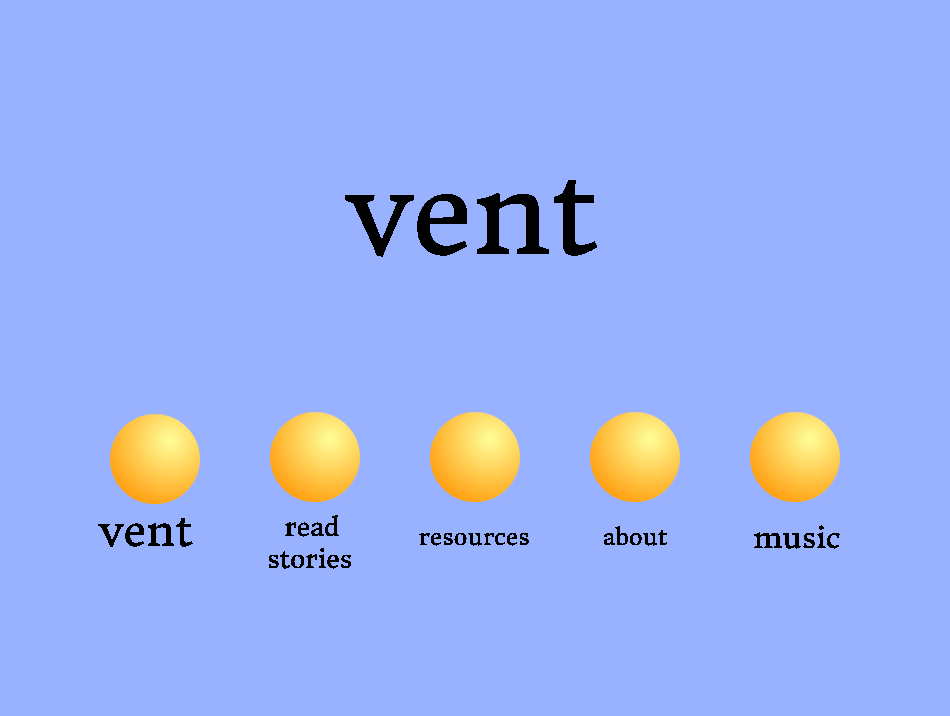

This is a project created by Robert, Sagyan, and Adil
focusing on the lack of small businesses with an online presence.
A project to learn more about Black Lives Matter.

While using Vent, boys and men have a place to go to talk about
their mental health ups and downs and have an anonymous community
and also find resources.
Dealing with Street Harassment
Our project is a game where you can have fun and learn about
street harassment.

Prototype of a game to learn about how small businesses manage
the effects of gentrification.
Game about cities and climate change.
A game about immigration.

A game about mental health.
WILZER is essentially a ‘How are you doing?’ self reflection. Anyone can
take it if they want some info and advice on how to take better care
of themselves.
A game about women's rights.
In this game/quiz, you can learn some new facts about women's rights and famous activists.
Increasing Diversity in CS
A project about increasing awareness of the lack of
diversity in computer science (CS) courses, as well
industry.